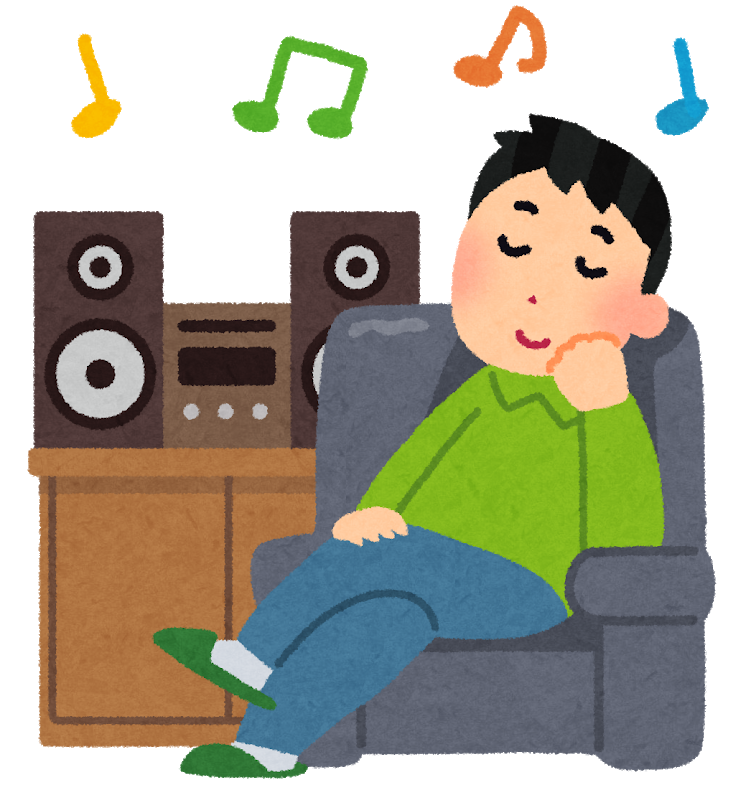
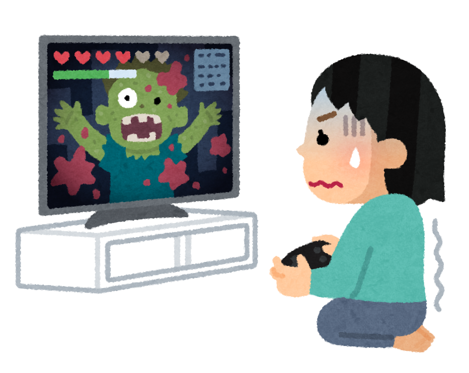

目次
アクティブ系
- ダンス
- ヨガ
- 音楽ライブ鑑賞
- オンライン謎解きゲーム
じっくり系
- 刺繍
- 瞑想
- クラシック鑑賞
- ソロゲーム
じっくり系
1．刺繍
じっくり系趣味の定番といえば刺繍。 落ち着いた空間でお茶でも飲みながら刺繍をしていると、何とも言えない充実感を得ることができます。 最近は、刺繡キットといって必要な道具と素材がすべてそろっているものもあるので、 初心者の方でも気軽に始められます。
メリット
刺繍した作品が残るので、とても達成感を得られる趣味です。 また、刺繍自体も楽しい趣味になりますが、ポーチやハンカチなどの作品を自分で使うこともできるので、実用的な趣味ともいえます。
デメリット
針を使った細かい作業なので、手先の不器用な方には難しいかもしれません。 長時間座って作業をするので、気を付けないと肩が凝ってしまう事もあります。
2．瞑想

自粛で人に会えない事を逆手にとって、瞑想で雑念を断ってみるのはどうでしょうか？ あわただしい世の中で、瞑想中の数分間だけメディアやスマホから離れて心や頭の中を整理すれば、 気持ちがとてもすっきりすると思います。
メリット
身一つでできるので、最もお手軽な趣味の一つと言えます。 また、激しい動きも技術もいらないので幅広い世代でできる趣味です。
デメリット
何か特別行動をするわけではないので、趣味で刺激を得たい、 趣味を特技にしたいという方には少し物足りないかもしれません。
3．クラシック鑑賞
お家で優雅なひと時を過ごせるクラシック鑑賞。クラシックを聞きながら、ゆったりとお家時間を過ごしてみるのは如何でしょう？ 敷居が高そうにも見えますが、有名な曲も多いので親しみやすい趣味だと思います。
メリット
今はYouTubeで多くのクラシックを無料で聞くことができるので、どなたでも始めやすいです。 また、音楽を聴くだけではなく曲の背景などを学ぶことで、教養も深めることができる奥深い趣味です。
デメリット
クラシック音楽は一曲が長いため、しっかり聴くとなると少し大変に感じるかもしれません。 また、長い歴史があるため、趣味として極めようとするとかなり根気がいる趣味です。
4．ソロゲーム
長時間家にいるからできる、コツコツ系のソロゲームはどうでしょうか？ 任天堂スイッチで「どうぶつの森」、PS5で「バイオハザードヴィレッジ」、PCで「マインクラフト」 お家の中で色々な世界を楽しむことができます！
メリット
様々な種類のゲームがあるので、自分に合うものが見つかりやすい趣味です。 また、ゲームは日々新作が出ているので飽きずに長く続けられるところもメリットです。
デメリット
始めるためにはゲームだけではなく、ゲーム機器が必要になるので、持っていない方は初期投資が必要になります。 お値段も少々高いので、趣味にお金はかけたくないという方には不向きかもしれません。
あなたに合うお家趣味は・・・
自分に合うお家趣味は見つかりましたか？色々な選択肢があって、迷ってしまった人もいるかもしれません。 そんな人は、とりあえず端から趣味を体験してみるのも一つの手です。 趣味を選びきれない方は、下の「趣味サイコロ」を使って、運に任せてみてはいかがでしょう？
趣味サイコロ
引く